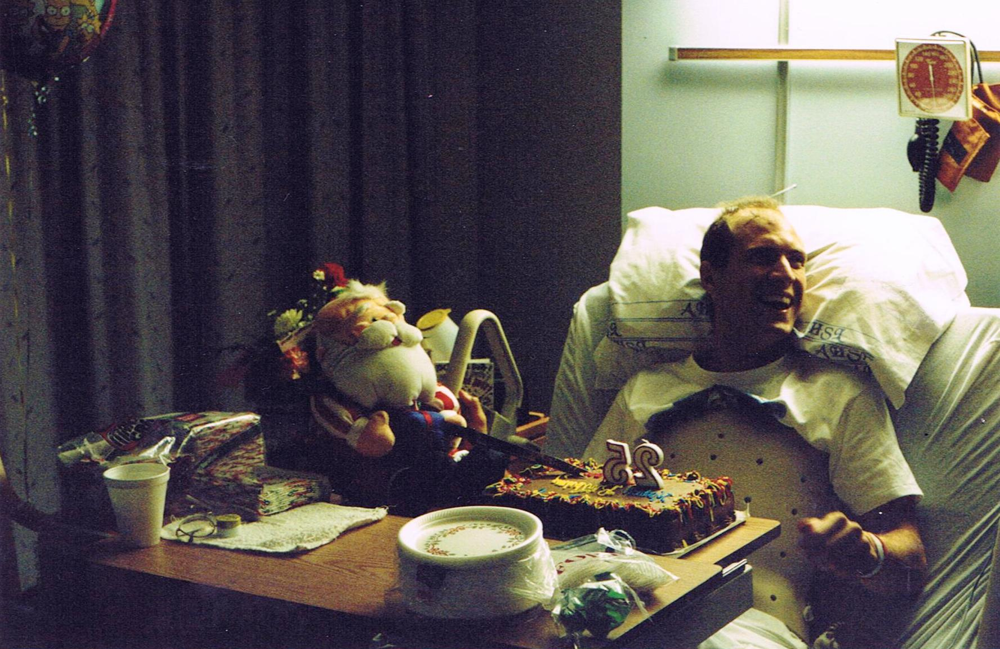
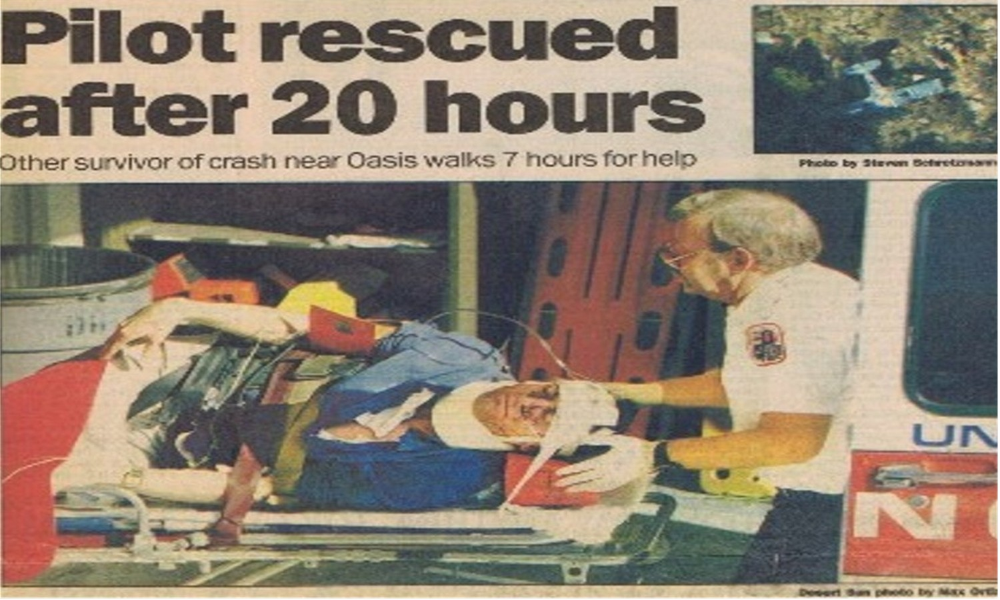
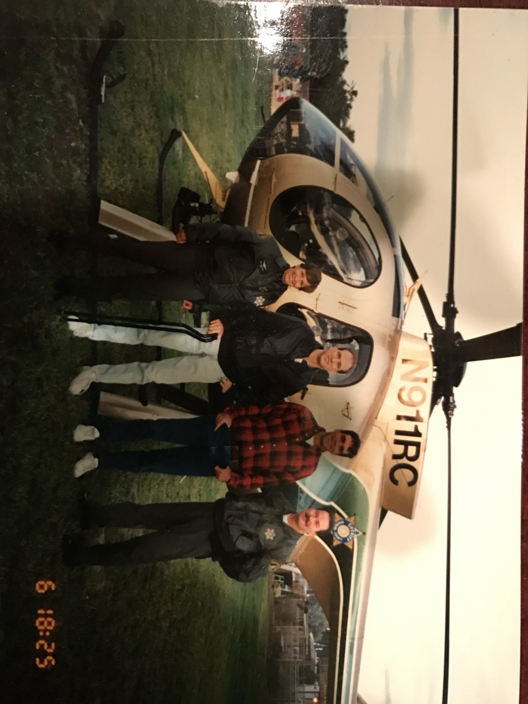

Karcher Prince Publishing · Forthcoming Memoir
1994
"Flying's almost killed me a couple of times, but it saves me every day."
The full story of the crash, the night and morning after, the rescue, and the year that followed. Of the doctors who said I wouldn't walk again, and the miracle I couldn't expect — worked through my friends, family, and caregivers — that proved them wrong. Of the day I climbed back into my only safe place in this world — an airplane cockpit — exactly three hundred and sixty-five days after I'd squandered everything I'd ever earned or been given. The changes I made, and the one I should but still haven't, just on the other side of "Impossible…"

My 25th birthday · December 21, 1994 · Desert Hospital
That's a birthday cake. I turned 25 exactly one week after the crash. I'm paralyzed in that photo. I didn't know it yet, but my big toes would move for the first time on January 1st — eleven days away.
I'm smiling because I had a steady stream of visitors, some of whom I'd never met. And because some stubborn, unreasonable part of me already didn't believe what the doctors were telling me.


With Linda, John, and Ron beside N91RC · During rehabilitation, 1995 · Note the canes.
Twenty-two years later · Fox and Friends, Los Angeles · Linda Morelli, John Irish, Ron Cohan, Jim Bixby
The rescue team: Deputies Linda Morelli and John Irish, Riverside County Sheriff's Aviation Unit · Ron Cohan, CHP Paramedic
Twenty-two years later, FNC covered our anniversary reunion in a Los Angeles studio on Fox and Friends.
"The debt," I said, "can never be repaid."
Want to know when it's available? Leave your contact below and we'll reach out when it's ready.